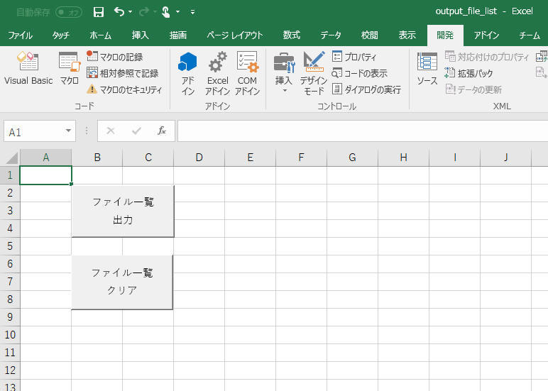

Excel VBA を使ってファイル一覧をシートに出力する方法について記載します。
1. ファイル一覧を出力する
2. 一覧のファイル名をダブルクリックすることで、対象のファイルを開く
サンプルプログラム
[概要] 自身のファイルがあるフォルダー以下のファイル一覧を、シートへ出力するVBAマクロを作成します。
[環境]
[画面]
機能は２つです。こんな画面にしてみました。
（機能１）ファイル一覧を「ファイル一覧」シートに出力する。
（機能２）「ファイル一覧」シートをクリアする。

一覧出力した結果はこんな感じ
'
' ここに記載のVBAは以下の書籍に記載の内容を参考に作成しました。
' 「日経ソフトウェア 2017年11月号 － 実務ですぐに役立つ Excel VBA 第7回 ファイルやフォルダーを操作するマクロ」
'
Sub ファイル一覧出力()
Application.ScreenUpdating = False
Worksheets("ファイル一覧").Activate
Cells.Clear
Cells(1, 1).Value = "ファイル保存先一覧"
Call ファイル一覧取得(ThisWorkbook.Path)
Columns("A").AutoFit
Application.ScreenUpdating = True
MsgBox "ファイルの一覧が出力されました", vbOKOnly, "完了"
End Sub
Sub ファイル一覧取得(Path As String)
Dim FileName As String, o As Object, r As Long
FileName = Dir(Path & "\*.*")
Do While FileName <> ""
r = Cells(Rows.Count, 1).End(xlUp).Row
Cells(r + 1, 1).Value = Path & "\" & FileName
FileName = Dir()
Loop
For Each o In CreateObject("Scripting.FileSystemObject").GetFolder(Path).SubFolders
Call ファイル一覧取得(o.Path)
Next o
End Sub
["ファイル一覧クリア" する部分のVBA]
Sub ファイル一覧クリア()
Application.ScreenUpdating = False
' "ファイル一覧" シートの内容をすべてクリア
Worksheets("ファイル一覧").Activate
Cells.Clear
' Columns("A").AutoFit
' A列の幅を初期化(8.38に設定)
Columns("A:A").Select
Selection.ColumnWidth = 8.38
Cells(1, 1).Select
Application.ScreenUpdating = True
End Sub
■マクロの登録
画面上のボタンとマクロを紐づけます。
[概要] 前章で出力したファイル一覧のファイル名をマウスでダブルクリックすることで、対象のファイルを開く、というVBAを記載します。
[環境]
["ダブルクリックしたファイル名のファイルを開く" 処理を行うVBA]
Private Sub Worksheet_BeforeDoubleClick(ByVal Target As Range, Cancel As Boolean)
If Target.Value <> "" Then
Cancel = True ' True: ダブルクリックしたセルにカーソルを入れない、False: ダブルクリックしたセルにカーソルを入れる
If Right(Dir(Target.Value), 5) = ".xlsx" Or Right(Dir(Target.Value), 5) = ".xlsm" Then
Workbooks.Open Target.Value ' (方法１) エクセルファイル("*.xlsx","*.xlsm")を開く
Else
Set WSH = CreateObject("Wscript.Shell")
WSH.Run Chr(34) & Target.Value & Chr(34), 4 ' (方法２) エクセル以外のファイルを開く
End If
End If
End Sub
サンプルプログラム ダウンロード
記載： 2017年10月06日 木下英俊, 新規作成